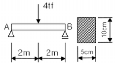
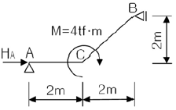
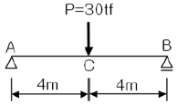
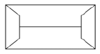
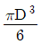
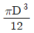
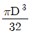
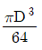
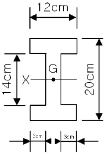
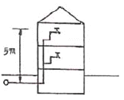

건축산업기사 (2005-08-07 기출문제)
1과목: 건축계획
1. 다음 중 사무소 코어내의 각 공간의 위치관계에 대한 설명 중 틀린 것은?
- 코어내의 공간과 임대사무실 사이의 동선은 간단하고 길지 않도록 한다.
- 엘리베이터는 가급적 중앙에 집중배치하고 엘리베이터홀이 출입구문에 바싹 접근해 있지 않도록 한다.
- 화장실은 그 위치가 외래자에게 잘 알려질 수 없도록 하고 잡용실과 급탕실은 서로 접근시키지 않도록 한다.
- 코어내의 공간의 위치가 명확해야 하며 각층마다 공통의 위치에 있도록 한다.
(정답률: 알수없음)

2. 상점의 진열대 배치유형 중 통로가 직선이어서 고객의 흐름이 빠르며 부분별 상품진열이 용이하고 대량판매에도 가능한 형식은?
- 환상배열형
- 굴절배열형
- 직렬배열형
- 복합형
(정답률: 알수없음)
3. 부엌의 각종 설비를 작업하기에 가장 적절하게 배열한 것은?
- 냉장고→레인지→개수대→작업대→배선대
- 냉장고→개수대→작업대→레인지→배선대
- 냉장고→개수대→레인지→작업대→배선대
- 냉장고→적업대→레인지→개수대→배선대
(정답률: 알수없음)
4. 아파트 건축의 각 평면형식에 대한 설명 중 옳지 않은 것은?
- 홀형(Hall Type)은 통행이 양호하며 프라이버시가 좋다.
- 편복도형은 복도가 개방형이므로 각호의 채광 및 통풍이 양호하다.
- 중복도형은 대지에 대한 건물이용도가 좋으나 프라이버시가 나쁘다.
- 계단실형은 통행부 면적이 높으며 독신자 아파트에 주로 채용된다.
(정답률: 알수없음)
5. 상점 계획에 관한 설명 중 부적당한 것은?
- 대면 판매형식은 진열면적이 증가한다.
- 파사드(Facade)는 대중성, 유인성이 있어야 한다.
- 종업원과 손님의 동선은 교차되지 않는 것이 바람직하다.
- 매장의 바닥은 요철이 없게 한다.
(정답률: 23%)
6. 공장건축의 레이아웃(Layout) 형식에 관한 설명 중 옳지 않은 것은?
- 공장의 생산성에 큰 영향을 미친다.
- 중화학 공업 등 장치공업은 레이아웃의 유연성이 크다.
- 제품중심의 레이아웃은 대량생산에 유리하며 생산성이 높다.
- 공정중심의 레이아웃은 다품종 소량생산이나 주문생산의 경우와 표준화가 어려운 경우에 적합하다.
(정답률: 77%)
7. 공장건축의 형식 중 파빌리온(Pavilion type)에 대한 설명으로 옳은 것은?
- 공장의 신설, 확장이 비교적 용이하다.
- 배수, 물홈통설치가 어렵다.
- 통풍, 채광이 좋지 않다.
- 일반기계조립공장, 단층건물이 많으며 평지붕무창 공장에 적합하다.
(정답률: 알수없음)
8. 쇼핑센터를 구성하는 주요 요소가 아닌 것은?
- 핵점포
- 몰(Mall)
- 페데스트리언 지대(Pedestrian area)
- 터미널(Terminal)
(정답률: 92%)
9. 다음 중 아파트의 주동계획에서 지상에 필로티를 두는 이유와 가장 관계가 먼 것은?
- 개방감의 확보
- 원활한 보행동선의 연결
- 오픈스페이스로써의 활용가능
- 용적율의 감축 및 공사비 절감
(정답률: 54%)
10. 다음의 학교 운영 방식에 대한 설명 중 옳지 않은 것은?
- 종합교실형 - 학생의 이동이 없으며, 초등학교 저학년에 대해 가장 권장할 만한 형이다.
- 달톤형 - 학급, 학생 구분을 없애고 학생들은 각자의 능력에 맞게 교과를 선택하고 일정한 교과가 끝나면 졸업한다.
- 교과교실형 - 일반교실은 각 학년에 하나씩 할당되고, 그 외에 특별교실을 가진다.
- 플래툰형 - 교사의 수와 적당한 시설이 없으면 실시가 곤란하다.
(정답률: 알수없음)
11. 학교 강당 및 체육관 계획에 대한 설명 중 옳은 것은?
- 강당은 반드시 전교생 전원을 수용할 수 있도록 크기를 결정한다.
- 강당을 체육관과 겸용할 경우에는 일반적으로 체육관 목적으로 치중하는 것이 좋다.
- 강당의 진입계획에서 학교 외부로부터의 동선을 별도로 고려할 필요는 없다.
- 체육관은 표준으로는 배구코트를 둘 수 있는 크기가 필요하다.
(정답률: 54%)
12. 학교건축에서 단층교사와 다층교사에 대한 설명 중 옳지 않은 것은?
- 단층교사는 채광 및 환기가 유리하며 학습활동을 실외에 연장할 수 있다.
- 다층교사는 전기, 급배수, 난방 등의 배선 ㆍ 배관을 집약할 수 있으며, 부지의 이용률이 높다.
- 단층교사는 재해시 피난상 불리하지만 치밀한 평면 계획을 할 수가 있다.
- 단층교사는 내진 ㆍ 내풍구조가 용이하다.
(정답률: 75%)
13. 다음 중 학교 내의 도서관 위치로 가장 알맞은 곳은?
- 학습군의 중심지로서 학생들의 이용이 편리한 곳
- 학교행정부서에 근접한 곳으로서 관리운영이 편리한 곳
- 교문 부근으로서 외부인들의 이용에 편리한 곳
- 학습군에서 떨어져서 조용한 곳
(정답률: 알수없음)
14. 다음 근린주구(近隣住區) 생활권에 대한 설명 중 가장 부적절한 것은?
- 인보구 - 어린이 놀이터가 중심
- 인보구 - 15~40호 기준
- 근린분구 - 400~500호 기준
- 근리분구 - 초등학교, 우체국 등이 설립
(정답률: 74%)
15. 다음 중 학교건축에서 클러스터형에 대한 설명으로 가장 알맞은 것은?
- 홀형식에 따라 접근하는 방식으로 교실을 소단위로 분할하여 배치하는 형
- 복도와 교실을 분리시키는 형
- 남측에 교실, 북측에 복도를 두는 형
- 복도를 따라 교실을 배치하는 형
(정답률: 64%)
16. 주택의 평면 계획에 관한 기술 중 틀린 것은?
- 거실은 통로와 홀(Hall)로 사용되는 것이 바람직하다.
- 거실의 생활은 의식적이고 동적인 행동이기 때문에 그 넓이는 단순히 실내거주인수에 소요되는 면적만으로 정해질 수 없다.
- 노인침실은 일조가 충분하고 전망 좋은 조용한 곳에 면하도록 한다.
- 현관의 크기는 주택의 규모,가족의 수, 방문객의 예상수 등을 고려한 출입량에 중점을 두는 것이 타당하다.
(정답률: 73%)
17. 상점계획에 대한 설명 중 옳지 않은 것은?
- 진열창(Show Window)은 간판, 입구, 파사드(Facade), 광고 등을 포함하여 점포전체의 얼굴이다.
- 진열창(Show Window)의 크기는 상점의 종류, 전면 길이 및 부지 조건에 따라 다르다.
- 상점 바닥면은 보도면에서 자유스럽게 유도될 수 있도록 계획한다.
- 고객 동선은 가능한 한 길게 종업원의 동선은 가능한한 짧게 한다.
(정답률: 39%)
18. 사무소 계획에서 일반적으로 표준이 되는 렌터블비(Rentable Ratio)로 가장 알맞은 것은?
- 40 ~ 45%
- 50 ~ 55%
- 55 ~ 60%
- 70 ~ 75%
(정답률: 알수없음)
19. 상점의 정면(Facade)구성에 요구되는 상점과 관련되는 5가지 광고 요소(AIDMA 법칙)에 속하지 않는 것은?
- 흥미(Interest)
- 주의(Attention)
- 기억(Memory)
- 장식(Decoration)
(정답률: 64%)
20. 하나의 주거단위가 복층형식을 취하는 메조넷형(Maisonette type)에 대한 설명 중 옳지 않은 것은?
- 주택내의 공간의 변화가 있다.
- 거주성, 특히 프라이버시가 좋다.
- 면적면에서 소규모 주택에 유리하다.
- 양면개구에 의한 일조, 통풍 및 전망이 좋다.
(정답률: 73%)
2과목: 건축시공
21. 콘크리트의 동결융해 저항성을 증진시키기 위해 사용하는 혼화제로 가장 적합한 것은?
- 팽창제
- AE제
- 소포제
- 유동화제
(정답률: 50%)
22. 거푸집 측압에 영향을 주는 요인에 관한 설명 중 틀린것은?
- 콘크리트 타설 속도가 빠를수록 측압이 크다.
- 묽은 콘크리트 일수록 측압이 크다.
- 철근량이 많을수록 측압이 크다.
- 단면이 클수록 측압이 크다.
(정답률: 34%)
23. 벽타일 공사에서 압착붙이기 공법의 붙임 모르타르의 바름 두께의 표준으로 옳은 것은?
- 5~7mm 정도
- 10~15mm 정도
- 18~20mm 정도
- 20~25mm 정도
(정답률: 알수없음)
24. 수밀 콘크리트를 만드는 방법으로 옳은 것은?
- 물시멘트비를 크게 한다.
- 응결재를 사용한다.
- 묽은 비빔 콘크리트를 사용한다.
- 된비빔 콘크리트를 사용한다.
(정답률: 42%)
25. 보강 철근 콘크리트 블록조의 다음 설명 중 틀린 것은?
- 세로철근으로 이형철근을 사용할 때에는 도중에서 잇지 않는다.
- 보강블록조는 원칙적으로 통줄눈 쌓기로 한다.
- 콘크리트 또는 모르타르 사춤은 두켜 이내마다 한다.
- 사춤모르타르 ㆍ 콘크리트의 이음위치는 줄눈과 일치 되게 한다.
(정답률: 알수없음)
26. 다음 창호와 창호철물과의 조합을 나타낸 것 중 옳지 않은 것은?
- 쌍여닫이문 - Door Hinge
- 여닫이문 - Pin Tumbler Lock
- 쌍여닫이창문 - 오르내리 꽂이쇠
- 회전창 - 레일과 바퀴
(정답률: 28%)
27. 공장에서 가공 또는 조립을 완료한 철골 부재에 대하여 녹막이 칠을 하여야 할 곳은?
- 조립에 의하여 맞닿는 면
- 콘크리트에 매입되지 않는 부분
- 현장 용접하는 부분
- 고장력 볼트 마찰 접합부의 마찰면
(정답률: 알수없음)
28. 말뚝박기시 굳은 진흙층이 있을 경우 말뚝옆에 가는 철관을 꽂고 그곳으로 물을 분사하여 수압에 의하여 지반을 무르게 한 뒤 말뚝박기를 하는 공법은?
- 그라우팅(Grouting)공법
- 케이슨(Cassion)공법
- 웰포인트(Well-point)공법
- 수사법(Water-jetting)
(정답률: 알수없음)
29. 방수공사에 관한 기술 중 옳지 않은 것은?
- 방수모르타르는 보통 모르타르에 비해 접착력이 부족한편이다.
- 시멘트 액체방수는 면적이 넓은 경우 익스팬션조인트를 반드시 설치해야 한다.
- 아스팔트 방수층은 바닥, 벽 모든 부분의 방수층 보호누름을 해야한다.
- 스트레이트 아스팔트의 경우 신축이 좋고, 내구력이 좋아 옥외방수에도 사용 가능하다.
(정답률: 알수없음)
30. 다음 중 건축공사의 직접공사비 원가로 바르게 구성된 것은?
- 재료비, 노무비, 장비비, 간접비
- 재료비, 노무비, 장비비, 경비
- 재료비, 노무비, 외주비, 경비
- 재료비, 노무비, 외주비, 간접비
(정답률: 37%)
31. 다음 중 철골세우기에 사용되는 장비가 아닌 것은?
- 배처플랜트
- 가이데릭
- 트럭크레인
- 진폴
(정답률: 알수없음)
32. 벽돌벽 쌓기에서 방수상 가장 주의를 요하는 부분은?
- 창대쌓기
- 모서리쌓기
- 벽쌓기
- 기초쌓기
(정답률: 42%)
33. 대지 주위의 흙파기면에 따라 널말뚝을 박은 다음 널말뚝 주변부의 흙을 남겨 가면서 중앙부의 흙을 파고 그 부분에 기초 또는 지하 구조체를 축조한 다음 이를 지점으로 흙막이 버팀대로 경사지게 가설하여 널말뚝 주변부의 흙을 파내는 흙막이 공법은?
- 오픈 컷 공법
- 트렌치 컷 공법
- 어스앵커 공법
- 아일랜드 공법
(정답률: 알수없음)
34. 바닥전용 거푸집으로서 거푸집판, 장선, 멍에, 서포트 등을 일체로 제작하여 수평, 수직방향으로 이동하는 거푸집은?
- 플라이잉 폼
- 클라이밍 폼
- 터널 폼
- 트래블링 폼
(정답률: 36%)
35. 다음이 설명하는 공정관리의 기법은? [ 반복공사에서 y축은 층수, x축은 공기로 하여 그 생산성을 기울기 직선으로 나타내는 방법으로 반복되는 작업이 많은 공사에 적용되는 기법 ]
- 바챠트(Bar chart)
- LOB(Line of Balance)
- 매트릭스 공정표(Matrix schedule)
- PERT
(정답률: 42%)
36. 적재량 6ton의 트럭으로 12,000포의 시멘트를 운반하고자 할 때 필요한 트럭의 대수는?
- 20대
- 40대
- 60대
- 80대
(정답률: 알수없음)
37. 셀프레벨링재 바름 또는 셀프레벨링(Self Leveling)재에 대한 설명 중 틀린 것은?
- 재료는 대부분 기배합 상태로 이용되며, 석고계 재료는 물이 닿지 않는 실내에서만 사용한다.
- 모든 재료의 보관은 밀봉상태로 건조시켜 보관해야 하며, 직사광선이 닿지 않도록 해야 한다.
- 경화후 이어치기 부분의 돌출 및 기포 흔적이 남아있는 주변의 튀어나온 부위는 연마기로 갈아서 평탄 하게하고, 오목하게 들어간 부분 등은 된비빔셀프 레벨링재를 이용하여 보수한다.
- 셀프레벨링재의 표면에 물결무늬가 생기지 않도록 창문 등을 밀폐하여 통풍과 기류를 차단하고, 시공중이나 시공완료 후 기온이 0℃ 이하가 되지 않도록 한다.
(정답률: 34%)
38. 다음 사항 중 관계가 없는 것은?
- 긴장재 - 거푸집이 변형되지 않게 연결고정
- 간격재 - 거푸집의 변형방지
- 격리재 - 거푸집의 상호간의 간격유지
- 박리제 - 거푸집의 제거용이
(정답률: 알수없음)
39. 건축재료인 목재의 일반적인 특징을 기술한 내용으로서 적당하지 않은 것은?
- 가공이 용이하다.
- 열전도율이 적다.
- 흡수 및 흡습성이 크다.
- 내구성이 좋다.
(정답률: 46%)
40. 공사 현장에서 공정표를 작성함에 있어서 가장 기본이 되는 사항은?
- 날씨
- 각 공사별 공사량
- 실행예산
- 재료반입 및 노무공급계획
(정답률: 알수없음)
3과목: 건축구조
41. 그림의 보에서 중립축에 작용하는 최대 전단 응력도는?

- 40 [kgf/cm2]
- 50 [kgf/cm2]
- 60 [kgf/cm2]
- 80 [kgf/cm2]
(정답률: 알수없음)
42. 강도설계법에서 인장측에 3042mm2 , 압축측에 1014mm2의 철근이 배근되었을 때 압축응력 등가블럭의 깊이로 옳은 것은? (단, fck=21MPa, fy=400MPa, 보의 폭 b=300mm이다.)
- 75.7mm
- 151.5mm
- 227.7mm
- 303.1mm
(정답률: 16%)
43. 다음 구조물에서 A단의 수평 반력의 값으로 맞는 것은?

- 0 tf
- 1 tf
- 2 tf
- 3 tf
(정답률: 알수없음)
44. 길이가 5m이고 단면적이 5cm2인 막대에 6tf의 축방향 인장력을 작용시켰을 때 늘어난 길이는? (단, 막대의 탄성계수 E = 2,100tf/cm2임)
- 0.19cm
- 0.29cm
- 3.5cm
- 5.04cm
(정답률: 알수없음)
45. 그림의 단순보에서 C점의 처짐은 얼마인가? (단, E = 2.1×105kgf/cm2, I = 1.2×106cm4)

- 0.63cm
- 0.85cm
- 1.27cm
- 2.61cm
(정답률: 40%)
46. 철근콘크리트구조의 원리에 관한 설명 중 옳지 않은 것은?
- 콘크리트는 철근이 녹스는 것을 방지한다.
- 콘크리트와 철근이 강력히 부착되면 철근의 좌굴이 방지된다.
- 철근의 선팽창계수는 콘크리트의 선팽창계수의 3배 정도이다.
- 콘크리트는 내구 ㆍ 내화성이 있어 철근을 피복 보호 하여 구조체는 내구 ㆍ 내화적이다.
(정답률: 42%)
47. 벽돌쌓기 방법 중 처음 한 켜는 마구리쌓기, 다음 한켜는 길이쌓기를 교대로 쌓는 것으로 통줄눈이 생기지 않는 것은?
- 영식 쌓기
- 화란식 쌓기
- 불식 쌓기
- 미식 쌓기
(정답률: 39%)
48. 다음 중 철근콘크리트 슬래브에서 ℓx = 4.0m 일 때 2방향 슬래브가 되기 위한 ℓy의 값은?
- 10.5m
- 9.5m
- 8.5m
- 7.5m
(정답률: 알수없음)
49. 부재의 단부에 표준갈고리가 있는 인장 이형철근의 기본정착길이는? (단, fck = 24MPa, fy = 400MPa, 철근의 공칭지름 = 25.4mm(D25))
- 480mm
- 520mm
- 560mm
- 600mm
(정답률: 알수없음)
50. 강도설계법 적용시 폭이 300mm, 춤이 600mm인 단면을 가지는 직사각형보의 최대철근비를 구하면 얼마인가?(단, 압축철근은 없으며, 사용재료의 fck = 24MPa, fy= 400MPa 이다.)
- 0.0180
- 0.0195
- 0.0225
- 0.0260
(정답률: 25%)
51. 강도설계법에 의한 철근콘크리트 횜재의 설계에서 fy= 400MPa인 철근을 사용할 경우 최소철근비는? (단, fck = 21MPa)
- 0.0021
- 0.0025
- 0.0035
- 0.0875
(정답률: 20%)
52. 평면상 그림과 같은 지붕형상을 무엇이라 하는가?

- 모임지붕
- 박공지붕
- 방형지붕
- 합각지붕
(정답률: 47%)
53. 보의 폭 b = 300mm, 유효 깊이 d = 540mm인 단근 직사각형 보에서 설계 모멘트 Mn = 208kN ㆍ m를 받도록 설계하려고 한다. 이 때 필요한 철근량을 구하면? (단, fck = 21MPa, fy = 300MPa, a = 93mm, ø = 0.90)
- 1253mm2
- 1453mm2
- 1561mm2
- 1853mm2
(정답률: 20%)
54. 단면계수 및 단면2차반지름에 관한 설명 중 잘못된 것은?
- 단면계수는 도심축에 대한 단면2차모멘트를 단면적으로 나눈 값의 제곱근이다.
- 단면계수가 큰 단면이 휨에 대해 크게 저항한다.
- 단면계수의 단위는 cm3, m3이다. 부호는 항상(+)이다.
- 단면2차반지름은 좌굴에 대한 저항값을 나타낸다.
(정답률: 42%)
55. 말뚝의 배치에 관한 설명 중 옳지 않은 것은?
- 말뚝의 최소중심간격은 말뚝 지름의 2.5배 이상으로 한다.
- 나무말뚝의 거리간격은 최소 45cm 이상이다.
- 기성콘크리트말뚝의 거리간격은 최소 75cm 이상이다.
- 제자리콘크리트말뚝의 거리간격은 최소 90cm 이상이다.
(정답률: 8%)
56. 왕대공 지붕틀에서 지붕틀 상호간의 연결을 튼튼히 하고, 평보의 옆휨을 막기 위하여 평보와 평보 사이에 걸쳐대는 부재로 옆휨막이 또는 대공밑둥잡이라고도 불리우는 것은?
- 대공가새
- 보잡이
- 귀잡이보
- 버팀대
(정답률: 0%)
57. 직경 D인 원형단면의 도심축에 대한 단면계수의 값은?




(정답률: 64%)
58. 그림과 같은 단면의 도심 G를 지나고 밑변에 나란히 X축에 대한 단면2차모멘트의 값은?

- 5608cm4
- 6608cm4
- 5628cm4
- 6628cm4
(정답률: 17%)
59. 건축구조의 특징에 관한 설명 중 옳지 않은 것은?
- 돌구조는 주요 구조부를 석재를 써서 구성한 구조로 내구적이나 횡력에 약하다.
- 벽돌구조는 지진과 바람 같은 횡력에 약하고 균열이 생기기 쉽다.
- 보강 블록조는 블록의 빈 속에 철근을 배근하고 콘크리트를 채워 넣은 것으로 보통 블록 구조보다 횡력에 잘 견딜 수 있다.
- 철골철근콘크리트 구조는 철골구조에 비해 내화성이 부족하고, 철근콘크리트구조에 비해 자중이 무겁다는 단점이 있다.
(정답률: 34%)
60. 철근콘크리트보에서 스터럽(Stirrup)의 가장 주된 역할은?
- 인장력에 의한 균열증대의 방지
- 주근 상호간의 위치보존
- 전단력에 의한 균열방지
- 주근의 부착력 증대
(정답률: 알수없음)
4과목: 건축설비
61. 다음 중 잠열을 이용한 난방방식으로 예열시간이 짧고 간헐운전에 적합하지만 스팀 해머를 발생할 수 있는 것은?
- 온수난방
- 증기난방
- 복사난방
- 온풍난방
(정답률: 24%)
62. 배수관의 관경 산정에 대한 설명 중 옳지 않은 것은?
- 배수 수직관의 관경은 이것에 접속하는 배수 수평 지관의 최대관경보다 작게 한다.
- 배수 수평지관의 관경은 이것에 접속하는 기구배수관의 최대관경 이상으로 한다.
- 배수관은 배수의 유하방향으로 관경을 축소해서는 안된다.
- 기구배수관의 관경은 이것에 접속하는 위생기구의 트랩구경 이상으로 한다.
(정답률: 20%)
63. 회로통기방식이라고도 하며, 통기수직관을 설치한 배수ㆍ 통기계통에 이용되며, 2개 이상의 기구트랩에 공통으로 하나의 통기관을 설치하는 방식은?
- 각개 통기방식
- 루프 통기방식
- 신정 통기방식
- 결합 통기방식
(정답률: 알수없음)
64. 급탕방식에서 팽창관에 대한 설명 중 옳지 않은 것은?
- 온수의 용적팽창을 흡수하고 보일러에 보급수를 공급한다.
- 배관중의 이상압력을 흡수하는 도피구이다.
- 보일러내 공기나 증기를 배출한다.
- 팽창관의 도중에는 밸브를 설치해서는 안된다.
(정답률: 알수없음)
65. 건축물의 공기조화 설비 중 냉각탑의 설치목적은?
- 옥상에 설치하여 공기의 흐름을 조절하기 위해서
- 공기에 의해 응축기의 열을 제거하기 위하여
- 오염된 공기를 세정시키기 위하여
- 냉매를 통과시켜 공기를 냉각시키기 위하여
(정답률: 50%)
66. 다음 광원에 대한 일반적인 설명 중 옳지 않은 것은?
- 백열전구는 동일 전압에서 전력이 큰 전구일수록 효율이 높다.
- 형광등은 백열전구에 비해 효율이 낮으며 수명도 짧다.
- 수은등은 2중 구조이므로 광속이 주위 온도의 영향을 받는 경우도 적다.
- 나트륨은 연색성이 나쁘며 도로 조명에 사용된다.
(정답률: 알수없음)
67. 배수배관에 설치하는 트랩에 대한 설명으로 옳은 것은?
- 관트랩에는 드럽트랩, 기구트랩이 있으며 사이폰 작용을 일으키기 쉽기 때문에 사이폰 트랩이라고도 불린다.
- 벽 및 구조부를 관통할 때 Sleeve 역할을 하므로 구조의 변형 등에 의해 배수배관이 파손되는 것을 막을 수 있다.
- 벌레 및 곤충의 침입을 막고 배수 및 오수의 가스가 옥내로 침입하는 것을 막기 위해 필요하다.
- 트랩의 유효봉수깊이는 일반적으로 10mm 이상 50mm이하이다.
(정답률: 알수없음)
68. 다음 중 강전설비에 해당하지 않는 것은?
- 조명설비
- 동력설비
- 배연설비
- 간선설비
(정답률: 알수없음)
69. 감시제어반에 있어서 감시를 위한 표시법으로 틀린 것은?
- 전원표시 - 백색램프
- 운전표시 - 적색램프
- 정지표시 - 오렌지색 램프
- 고장표시 - 부저 또는 벨
(정답률: 43%)
70. 다음의 각종 난방방식에 대한 설명 중 옳은 것은?
- 증기난방은 온수난방에 비해 예열시간이 길다.
- 온수난방은 방열온도가 높으며 장치의 열용량이 적다.
- 복사난방은 실의 상하 온도차가 크지만 일시적인 난방에는 바람직하다.
- 온풍난방은 가열 공기를 보내어 난방 부하를 조달함과 동시에 습도의 제어도 가능하다.
(정답률: 5%)
71. 다음 중 옥내소화전설비에 관한 설명으로 옳은 것은?
- 수원은 그 저수량이 옥내소화전의 설치개수가 가장 많은 층의 설치개수에 1.3m3를 곱한 양 이상이 되도록 하여야 한다.
- 옥내소화전 노즐선단의 방수압력은 1~12kg/cm2이어야 한다.
- 옥내소화전용 펌프의 토출량은 옥내소화전이 가장 많이 설치된 층의 설치개수에 100를 곱한 양 이상이어야 한다.
- 송수구는 지면으로부터 높이가 0.5m 이상 1m 이하의 위치에 설치한다.
(정답률: 알수없음)
72. 실의 면적 100[m2], 천장높이 3.5[m]의 교실에서 소요 평균 조도가 100[lx]일 때 40[W]의 형광등을 사용한다면 몇 개가 필요한가? (단, 40[W]의 형광등 1개당의 광속은 2000[lm], 조명률은 50[%], 감광보상률은 1.5로 한다.)
- 23개
- 19개
- 15개
- 8개
(정답률: 알수없음)
73. 태양복사열이 벽체에 미치는 영향을 고려한 가상의 온도차를 무엇이라 하는가?
- 상당온도차
- 유효온도차
- 실효온도차
- 효과온도차
(정답률: 알수없음)
74. 다음 중 환기횟수에 대한 설명으로 가장 알맞은 것은?
- 하루 동안의 환기량을 실의 용적으로 나눈 값이다.
- 한시간 동안의 환기량을 실의 용적으로 나눈 값이다.
- 한시간 동안에 창문을 여닫는 회수를 의미한다.
- 하루 동안에 공조기를 작동하는 회수를 의미한다.
(정답률: 79%)
75. 인터폰의 접속 방식에 따른 분류에 속하지 않는 것은?
- 모자식
- 토크식
- 상호식
- 복합식
(정답률: 58%)
76. 피뢰침의 구성요소가 아닌 것은?
- 돌침부
- 피뢰도선
- 접지전극
- 개폐기
(정답률: 62%)
77. 그림과 같은 2층에 세정밸브를 설치하는 경우(수도 본관으로부터 세정밸브까지의 높이는 5[m], 수도본관의 최저압력은? (단, 급수방식은 수도직결방식이며 세정 밸브의 최저 필요압력은 0.7[kg/cm2], 마찰 손실은 무시한다.)

- 0.7kg/cm2
- 0.2kg/cm2
- 1.2kg/cm2
- 3.5kg/cm2
(정답률: 알수없음)
78. 건구온도 20℃, 상대습도 60%인 습공기 7,500kg/h를 27℃까지 가열하였을 경우 가열기의 가열량은 얼마인가?
- 7,500kcal/h
- 12,600kcal/h
- 15,000kcal/h
- 21,500kcal/h
(정답률: 19%)
79. 다음 중 공조방식을 열의 분배 방법에 의해 분류하였을 때, 중앙공조방식에 해당되는 것은?
- 단일덕트방식
- 룸쿨러방식
- 멀티 유닛형 룸쿨러방식
- 패기지 방식
(정답률: 알수없음)
80. 간접조명에 대한 설명 중 옳지 않은 것은?
- 강한 음영이 없고 부드럽다.
- 조도가 균일하지 않지만 국부적으로 높은 조도를 얻기 쉽다.
- 경제성보다 분위기를 중요시하는 장소에 적합하다.
- 실내 반사율의 영향이 크다.
(정답률: 43%)
5과목: 건축관계법규
81. 다음 시설물 중 동일한 시설면적일 때 부설주차장을 가장 많이 설치하여야 하는 용도는?
- 위락시설
- 판매 및 영업시설
- 제2종 근린생활시설
- 업무시설
(정답률: 75%)
82. 위반 건축물에 대한 조치 중 틀린 것은?
- 전기 공급 중지 요청
- 영업행위 허가 금지 요청
- 도시가스 공급시설 설치 중지 요청
- 상하수도 공급 중지 요청
(정답률: 19%)
83. 대지면적 200m2에 각층 바닥면적이 100m2인 지상 4층, 지하 1층 건축물을 건축할 경우의 용적률은?
- 100%
- 150%
- 200%
- 250%
(정답률: 12%)
84. 지하식 또는 건축물식에 의한 자주식주차장의 경우 폐쇄회로 텔레비전 및 녹화장치를 포함하는 방법설비를 설치해야할 주차대수 규모기준은?
- 주차대수 30대를 초과하는 규모
- 주차대수 40대를 초과하는 규모
- 주차대수 50대를 초과하는 규모
- 주차대수 60대를 초과하는 규모
(정답률: 40%)
85. 주차장법의 목적과 가장 관계가 적은 것은?
- 주자장의 설치
- 주자창의 정비
- 주차장의 개량
- 주자창의 관리
(정답률: 34%)
86. 다음 거실의 용도 중 조도의 기준이 가장 높은 것은?
- 독서
- 판매
- 집회
- 오락일반
(정답률: 알수없음)
87. 건폐율(建蔽率)에 대한 설명 중 올바른 것은 다음 중 어느 것인가?
- 대지면적에 대한 연면적의 비율
- 대지면적에 대한 바닥면적의 비율
- 대지면적에 대한 건축면적의 비율
- 대지면적에 대한 공지면적의 비율
(정답률: 40%)
88. 다음 중 건축물 부위의 열관류율이 제일 높은 것은?(단, 중부 지역임)
- 외기에 간접 면하는 거실의 외벽
- 외기에 직접 면하는 최상층 거실의 반자 또는 지붕
- 공동주택의 측벽
- 공동주택의 층간바닥으로 바닥난방인 경우
(정답률: 알수없음)
89. 건축물의 대지가 2가지 이상의 지역 ㆍ 지구에 걸치는 경우 건축물 및 대지 전부에 대해서 면적 배분에 관계없이 그 지역 ㆍ 지구의 규정을 적용받는 지역 또는 지구는?
- 상업지역
- 녹지지역
- 풍치지구
- 미관지구
(정답률: 알수없음)
90. 방화벽의 구조기준으로 옳지 않은 것은?
- 내화구조로서 홀로 설 수 있는 구조일 것
- 방화벽의 양쪽 끝과 위쪽 끝을 건축물의 외벽면 및 지붕면으로부터 0.5미터 이상 튀어나오게 할 것
- 방화벽에 설치하는 출입문에는 갑종방화문 또는 을 종방화문을 설치할 것
- 방화벽에 설치하는 출입문의 너비 및 높이는 각각 2.5미터 이하로 할 것
(정답률: 알수없음)
91. 다음 중 백화점에 설치할 회전문의 위치조건과 가장 관계가 있는 것은?
- 엘리베이터
- 에스컬레이터
- 화장실
- 방화구획
(정답률: 34%)
92. 권한의 위임에서 구청장(자치구가 아닌 구의 구청장을 말한다)에게 위임 할 수 있는 권한의 규모 기준은?
- 3층 이하로서 연면적 1,000m2이하인 건축물의 건축ㆍ 대수선 및 용도변경
- 3층 이하로서 연면적 2,000m2이하인 건축물의 건축ㆍ 대수선 및 용도변경
- 5층 이하로서 연면적 2,000m2이하인 건축물의 건축ㆍ 대수선 및 용도변경
- 6층 이하로서 연면적 2,000m2이하인 건축물의 건축ㆍ 대수선 및 용도변경
(정답률: 알수없음)
93. 자주식주차장으로서 지하식 또는 건축물식에 의한 노외주차장의 차로 설치 기준으로 옳지 않은 것은?
- 굴곡부는 자동차가 5m 이상의 내변반경으로 회전이 가능하도록 하여야 한다.
- 경사로의 노면은 이를 고운 면으로 하여야 한다.
- 경사로의 종단구배는 곡선부분에서는 14%를 초과하여서는 아니된다.
- 주차대수규모가 50대 이상인 경우의 경사로는 너비6m 이상인 2차선의 차로를 확보하거나 진입차로와 진출차로를 분리하여야 한다.
(정답률: 42%)
94. 주차형식에 따른 차로의 너비 기준으로 옳은 것은? (출입구가 2개 이상인 경우)
- 평행주차 - 3.3m 이상
- 60도 대향주차 - 5.0m 이상
- 교차주차 - 4.5m 이상
- 직각주차 - 5.0m 이상
(정답률: 32%)
95. 건축물을 특별시 또는 광역시에 건축하고자 하는 경우 특별시장 또는 광역시장의 허가를 받아야 하는 건축물 규모의 기준으로 옳은 것은?
- 층수가 21층 이상이거나 연면적의 합계가100,000m2 이상인 건축물
- 층수가 21층 이상이거나 연면적의 합계가300,000m2 이상인 건축물
- 층수가 41층 이상이거나 연면적의 합계가100,000m2 이상인 건축물
- 층수가 41층 이상이거나 연면적의 합계가300,000m2 이상인 건축물
(정답률: 35%)
96. 시설물의 부지인근에 부설주차장을 따로 설치할 수 있는 인근부지의 범위는 당해 부지의 경계선으로부터 부설주차장의 경계선까지의 도보거리로 몇 미터 이내이어야 하는가?
- 300미터
- 400미터
- 600미터
- 800미터
(정답률: 알수없음)
97. 건축허가 신청시 에너지 절약 계획서를 제출하지 않아도 되는 건축물은?
- 바닥면적 합계가 500m2인 특수목욕장
- 바닥면적 합계가 1,000m2인 실내수영장
- 바닥면적 합계가 1,500m2인 호텔
- 바닥면적 합계가 2,000m2인 병원
(정답률: 7%)
98. 승용승강기의 설치기준이 가장 완화된 것부터 강화되어 있는 것으로 나열된 건축물의 용도는?
- 공동주택 - 관람장 - 위락시설
- 공연장 - 위락시설 - 숙박시설
- 집회장 - 교육연구 및 복지시설 - 업무시설
- 교육연구 및 복지시설 - 업무시설 - 관람장
(정답률: 알수없음)
99. 공개공지등의 확보를 위한 규정의 내용과 관계가 없는 것은?
- 용도지역
- 연면적의 합계
- 건축물의 용도
- 건폐율의 완화
(정답률: 70%)
100. 구조기준 및 구조계산에 따라 구조의 안전을 확인하지 않아도 되는 것은?
- 층수가 3층인 건축물
- 높이가 15m인 2층 교회 건축물
- 기둥과 기둥사이가 8m인 공장 건축물
- 연면적이 1천제곱미터인 철근콘크리트의 건축물
(정답률: 알수없음)
화장실은 외래자에게 잘 알려지지 않도록 하고, 잡용실과 급탕실은 서로 접근시키지 않는 것은 보안상의 이유입니다. 외부인이나 임차인 외의 사람들이 코어내의 공간에 출입하는 것을 방지하기 위해서입니다.